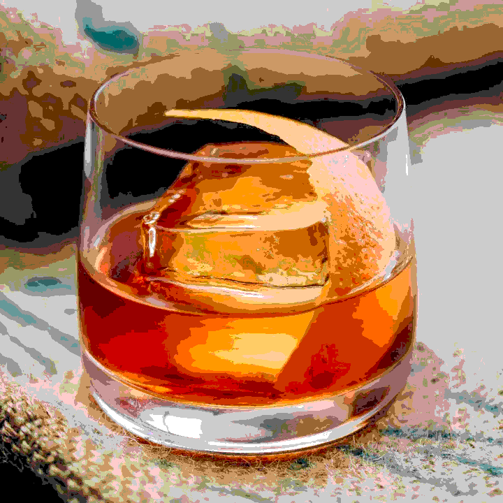

Bourbon Old-Fashioned

Description
It's old-fashioned and we like it that way!
- 1/2 teaspoon sugar
- 3 dashes Angostura bitters
- 1 teaspoon water
- 2 ounces bourbon
- Garnish: orange peel
- Add the sugar and bitters to a rocks glass, then add the water, and stir until the sugar is nearly dissolved.
- Fill the glass with large ice cubes, add the bourbon, and gently stir to combine.
- Express the oil of an orange peel over the glass, then drop in.